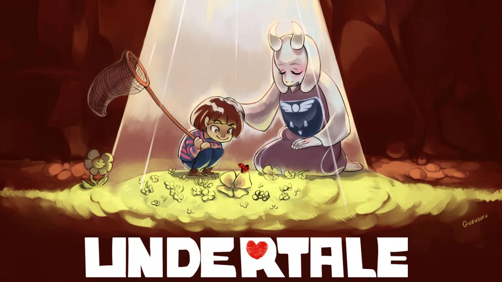
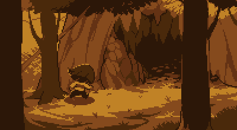

Biografía
- Undertale es un juego indie de rol (RPG), desarrollado por Toby Fox, que trata de un mundo donde tus decisiones importan. Toby Fox hizo este juego como práctica para crear un juego que soñaba con crear: Deltarune

Sinopsis
- la historia sigue a un niño humano que cae accidentalmente en una montaña que lo lleva al subsuelo, una region aislada bajo tierra donde los monstruos fueron desterrados tras una guerra antigua contra los humanos. para regresar a la superficie, el protagonista debe atravesar la barrera magica que mantiene a los monstruos prisioneros,lo que obliga a cruzar todo el reino.

El Prólogo: La Guerra de las Dos Razas
- Hace mucho tiempo, la Tierra estaba gobernada por dos razas: Humanos y Monstruos. Un día, estalló una guerra entre ambos. Tras una larga batalla, los humanos salieron victoriosos y, mediante un hechizo mágico, sellaron a los monstruos en el Subsuelo bajo el Monte Ebott.
- El sello solo puede romperse con el poder de siete almas humanas. Hasta el inicio del juego, el Rey de los monstruos, Asgore Dreemurr, ya ha logrado recolectar seis.